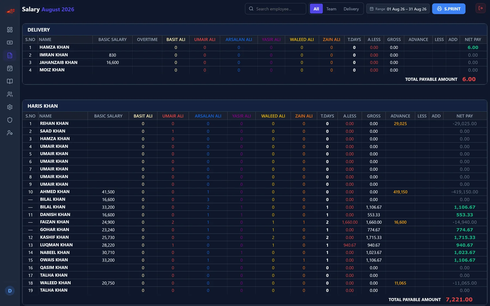
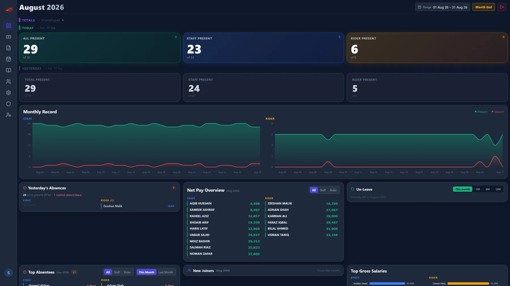
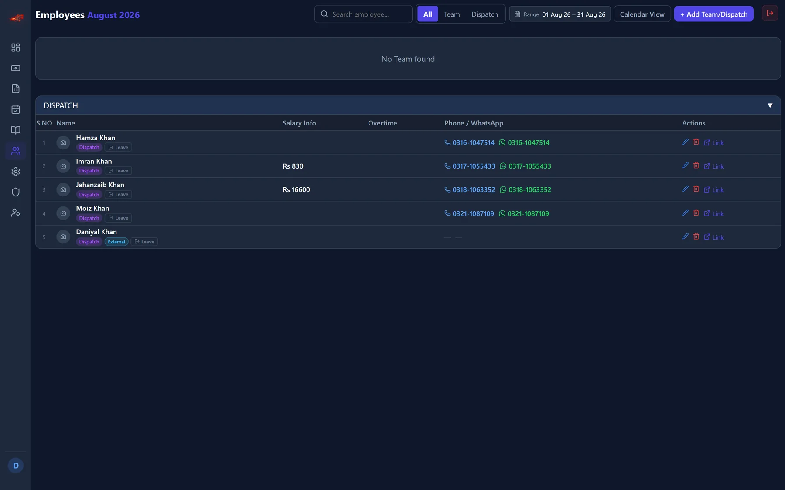
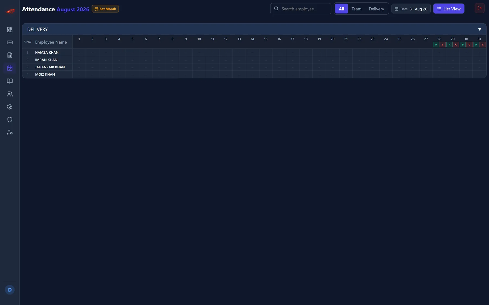
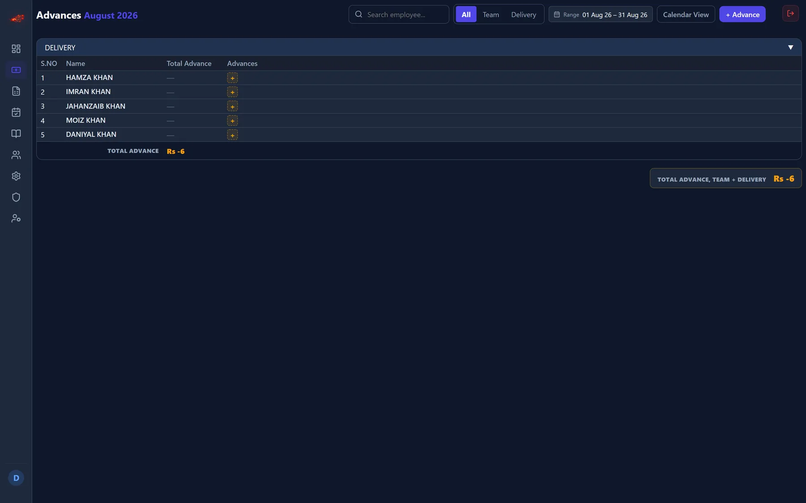
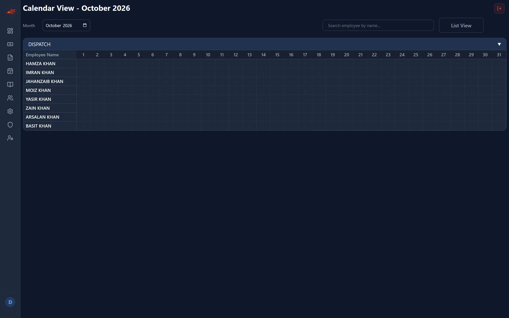
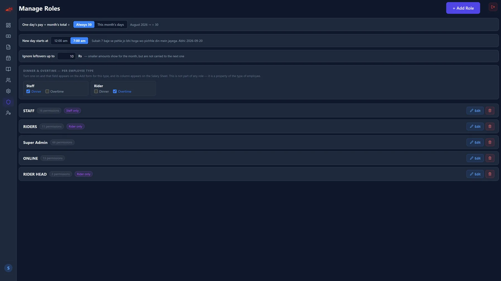
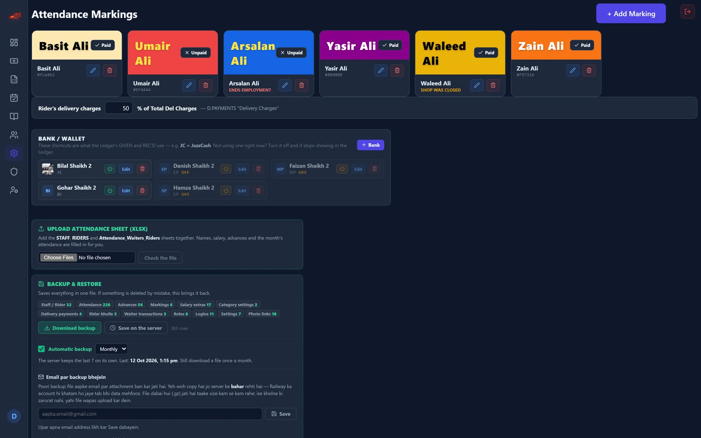

Operations
Axon Attendance
Attendance, payroll and the daily close for a small team, in one system.
One system for marking, payroll and permissions, so month-end is a report that is already finished rather than three sheets reconciled by hand.

The problem
Attendance in one sheet, salaries in another, advances in a third, and the month-end figure assembled by hand from all three.
What it does
Daily marking across a configurable set of statuses, each with its own colour and its own rule about whether it adds to salary. The payroll sheet then computes the month from that marking: basic, allowances, per-status day counts, deductions, advances, additions and net pay per person.
A new browser cannot sign in until a Super Admin approves that device. That was not in the brief - it is a decision the product made about a system that holds everyone's pay.
Details
- Month-end payroll computed from daily marking — per-status day counts, advances, deductions, net pay
- Configurable marking types, each with its own rule about whether it adds to salary
- Roles and permissions per screen, so a cashier sees the cash desk and nothing else
- A new browser cannot sign in until a Super Admin approves that device
More screens






